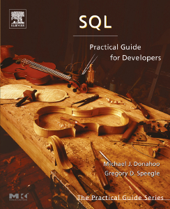

SQL: Practical Guide for Developers

Welcome to the web resource for SQL: Practical Guide for Developers.
Errata: PDF
Database Systems
There are many DBMS (Database Management System) vendors to choose
from. While all of them use SQL, none of them implement it exactly as
described in the specification.
SQL Query Tools
All relational DBMSs come with their own tools for SQL processing,
from command-line to graphical query constructors. There are also
several generic query processors that can connect to a variety of
DBMSs. The main advantage of such tools is that they work same for
all DBMSs so you don't have to learn a tool for each DBMS you use.
Also, the generic tools are sometimes "better" than the DBMS-specific
tools. Below is a list of such tools: